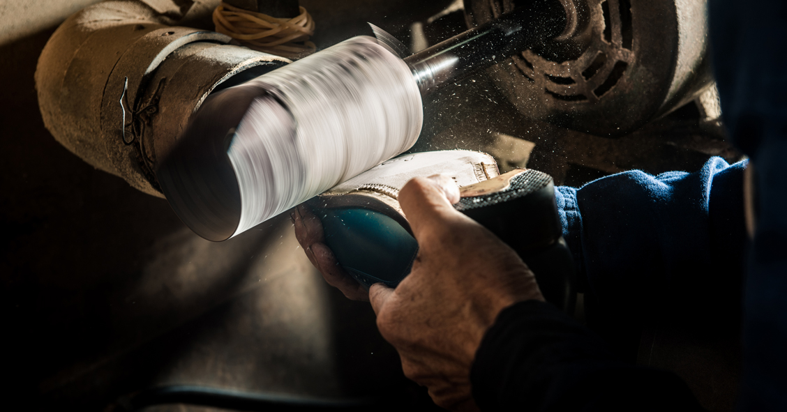
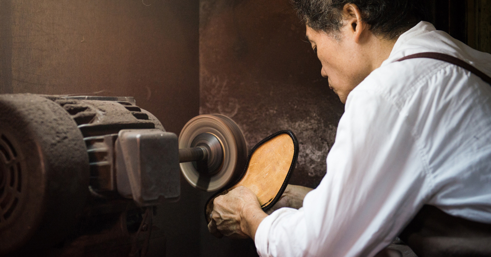
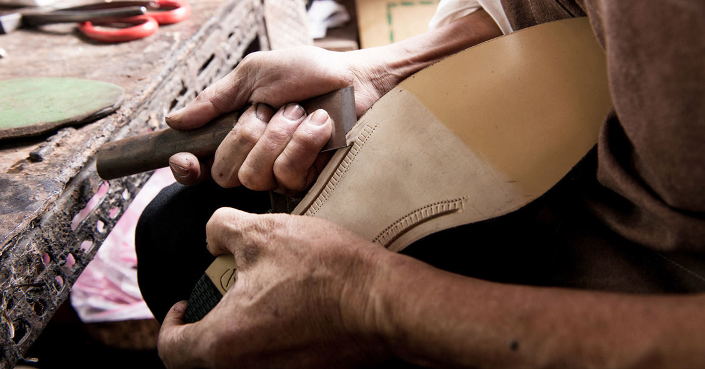
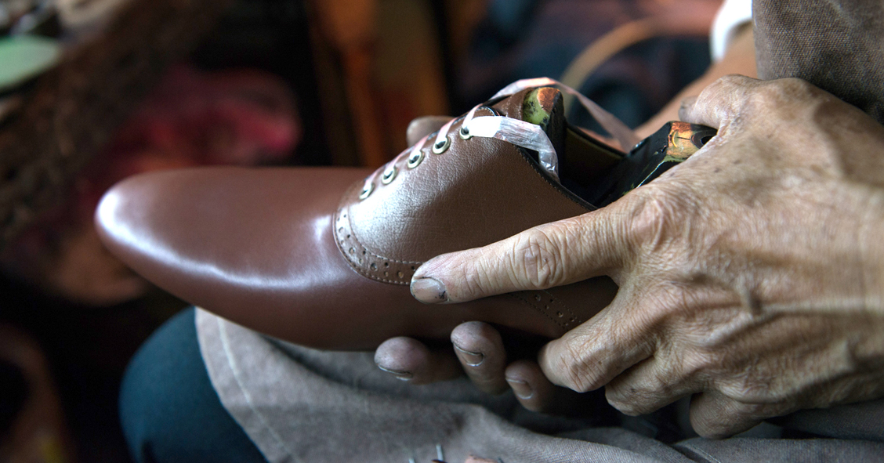

關於有肉

回到鞋工藝的美好時代
1976年，台灣曾歷經製鞋工業興盛的黃金年代。
事隔多年，台灣的製鞋工藝式微。
我們開始思考，是否可以回到皮鞋工藝的美好年代。
並為技術精良的製鞋師傅，找到生命的轉變。
林果良品「不只是一家鞋店」，
從朋友關係找回人的溫度，描繪台灣美好生活的模樣；
以製鞋工匠精神出發，
延伸出細節品味的林果紳士風格。

關於林果良品
林果，本是創辦人信儒的小名。
在初創辦「ORINGO林果良品」之時，
取其意品質優良的商品。
如同在廣闊的森林土地中鮮美的果實一樣難尋，
就算最後果實未被採集，
瓜熟蒂落，還能帶給土地轉化的養份。
林果良品，在2006年開始發芽。
然而，心中的種子，早就根深蒂固地被植在那個年幼懵懂，於鞋廠裡成長的美好歲月中...

鞋工藝本事
林果良品的皮鞋，
都是由數十年經驗豐富的台灣製鞋師傅製作，
因為擁有對鞋子細部精準的經驗判斷，
經由繁複工序與細微手感，
才能成就一雙合腳的好鞋。
尤其是皮革大底 (Leather Sole) 的鞋子
更是需要精細的手工製作，
一雙皮底鞋須以100多道的製作步驟，
從劃皮、縫製鞋面、拉幫、作底、脫楦…等，
約需等待25天的製期才能完成，
稱為手工鞋類的工藝品。

林果皮鞋的誕生
這是林果良品皮鞋的誕生，技術是一種動態的過程，
我們僅僅能紀錄一雙皮鞋在當下時刻的製作方法。
多數朋友對師傅工作的環境想像，是更優雅的，
或許更具設計感。可是我們很想呈現，
一股來自工藝技術所展現生命力的真實性。
敲打、裁剪間。手的溫度，進入鞋子裡。